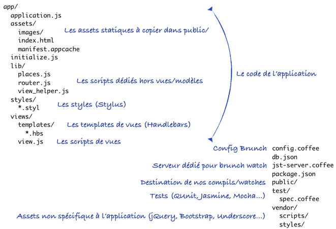

JS Total
3ème partie • 20/02/2014
Christophe Porteneuve @ JS Attitude & Jean-Pierre Vincent
JS Total
4 journées du 18 au 21 février
Aujourd’hui : développement d’une SPA complète
Demain : industrialisation et web mobile
Notre p’tite SPA
Archi générale

« Boot »
Bon, pour le moment, je passe sous Keynote…
Étapes de dev
Faire tourner
Récupérer et retenir le nom
L’horloge
Check-in : géolocalisation W3C + Places
Améliorer l’UX de check-in
La persistence, les collections Backbone et la synchro
L’historique de check-ins
Améliorer la couche de persistence
…
Étapes de dev (2)
WebSockets et diffusion temps réel
Garder la liste triée : l’ordre naturel
Détection online/offline, court-circuit et réconciliation
Exploiter AppCache
Améliorer l’UX avec AppCache en proposant le rechargement
Source final, bilan et version Docco
À suivre…
Développer, optimiser, packager
Les tests !
La doc !
Les perfs !
Du web mobile !
À demain !